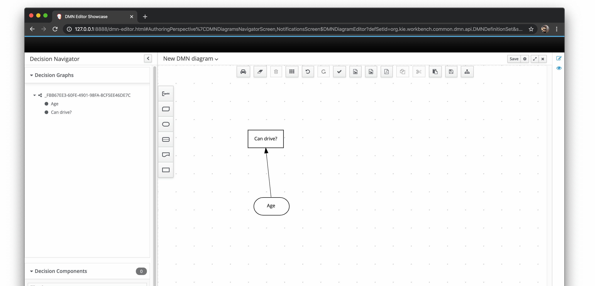

FEEL functions and the DMN editor
The DMN FEEL expressions are quite simple and powerful. However, this powerfulness has a price — it’s not easy to remember so many functions!
Thus, we’ve decided to introduce the code completion feature on our literal expression editor. Now, users can quickly see a list of all FEEL functions available.
Additionally, we’re including named elements as suggestions. Then, users can avoid any typo when they are trying to reference a data type or a DRG element. See it in action:

This feature is a work in progress. New enhancements are in development, like context-based suggestions, or details regarding each function. But, you don’t need to wait for such features to learn more about FEEL functions, you can check the “Built-in functions” section into the DMN spec.
Stay tuned for the next posts! :-)
FEEL functions and the DMN editor was originally published in KIE Group — Decision Tooling team on Medium, where people are continuing the conversation by highlighting and responding to this story.